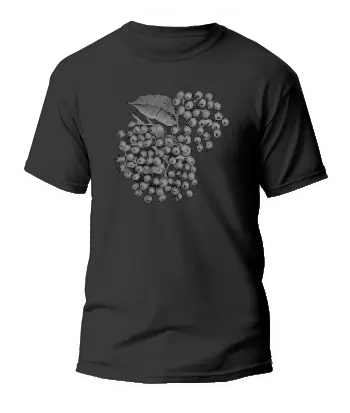
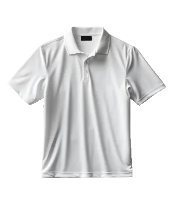
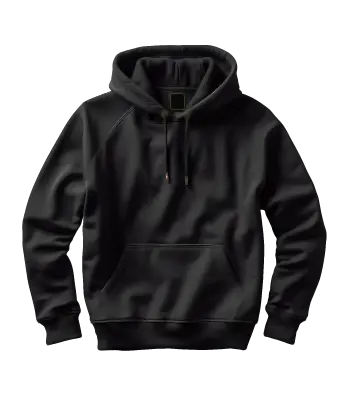
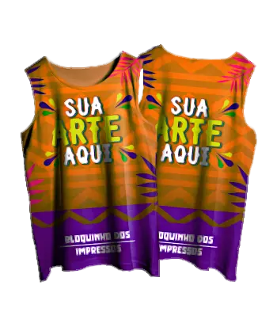
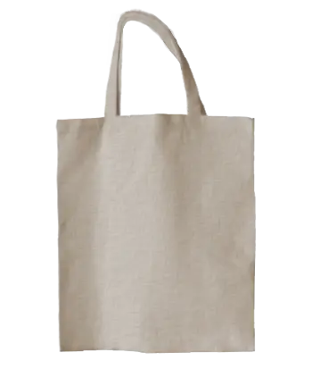
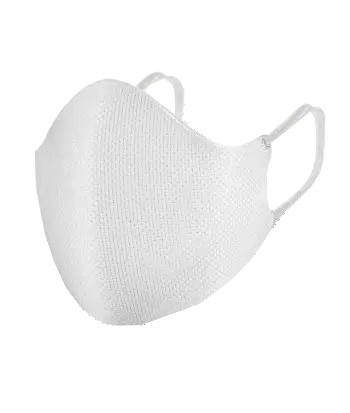
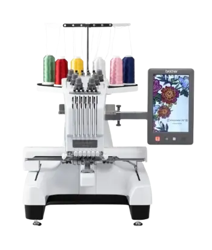
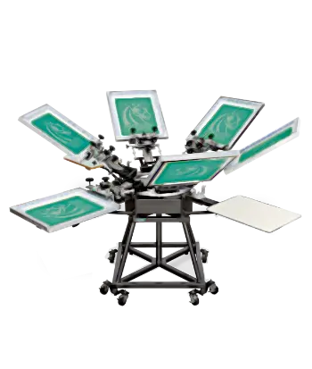

Camiseta
- O molde da camiseta é cortado a partir de grandes rolos de tecido
usando máquinas de corte computadorizadas para garantir precisão e
minimizar o desperdício. As peças são montadas e costuradas juntas,
envolvendo a costura dos painéis frontal e traseiro, a fixação das
mangas e a adição da gola canelada. A montagem completa é costurada
com máquinas interlock ou overlock para durabilidade e um acabamento
limpo, frequentemente apresentando estampas, bordados ou desenhos
impressos.
Nossos produtos


Polo
- Camisetas polo possuem uma gola de malha e podem ter uma plaqueta
com botões, proporcionando um visual de elegância. Com mangas curtas
dobradas e uma silhueta mais ajustada que as camisetas comuns,
destacam-se pelo toque refinado do colarinho. Frequentemente
apresentam logotipos ou emblemas bordados, oferecendo uma forma
sutil de exibir marcas. São peças versáteis e duradouras.
Agasalho
- O moletom, muitas vezes com capuz e bolso canguru, oferece ajuste
confortável com ou sem cordões. Feito de malha dupla face, com um
lado liso e outro felpudo, proporciona respirabilidade e conforto
devido ao ajuste folgado e à mistura premium de algodão e poliéster.
Ideal para exercícios ou dias frios.


Abadá
- O abadá é uma peça única associada a eventos festivos como
micaretas e blocos carnavalescos. Seu design vibrante, cores vivas e
estampas temáticas proporcionam conforto durante celebrações
prolongadas. Além disso, serve como identificação visual para
participantes de grupos específicos, promovendo coesão e espírito de
equipe. As estampas personalizadas muitas vezes se tornam lembranças
tangíveis de eventos especiais, carregando memórias de celebrações
animadas.
Ecobag
- Ecobags de algodão oferecem uma alternativa ecologicamente correta
às sacolas plásticas, sendo produzidas a partir de materiais
naturais e biodegradáveis. Sua robustez permite o uso repetido,
reduzindo a necessidade de sacolas descartáveis, e são
personalizáveis, permitindo designs e mensagens criativas. Além de
melhorar o apelo estético, servem como meio de conscientização sobre
questões ambientais e sustentabilidade.


Máscara
- A máscara de algodão é um dispositivo crucial na prevenção da
propagação de partículas respiratórias, priorizando a higiene e
segurança. Sua reutilização, ao ser lavada, a torna sustentável e
economicamente vantajosa em comparação com as descartáveis,
contribuindo para a redução do desperdício. O algodão, devidamente
ajustado, atua como uma barreira efetiva contra partículas maiores,
sendo uma ferramenta eficaz em diversas situações cotidianas.
Bordado
- O bordado, ao contrário de designs impressos, envolve a costura
intricada de fios no tecido, resultando em um efeito tridimensional
e texturizado. Conhecido por sua durabilidade, os padrões bordados
resistem a lavagens e uso frequente sem desbotar ou descascar. É uma
escolha popular para logotipos corporativos, emblemas de equipe e
representações de marca, proporcionando uma imagem polida e
sofisticada. Esse processo permite detalhes intrincados e uma ampla
gama de opções de cores, seja para um nome, iniciais ou um motivo
exclusivo.


Silkscreen
- O silkscreen é realizado por meio de uma tela de malha fina
esticada sobre uma moldura. O design é transferido para a tela, que
é posicionada sobre a camiseta. A tinta é então pressionada através
do desenho em cada tela, transferindo o design para a peça. Esse
processo é repetido para cada cor, resultando em uma impressão com
cores vibrantes. Ideal para criar designs chamativos e duráveis em
camisetas, o silkscreen oferece resistência ao desbotamento e
reprodução precisa de detalhes.